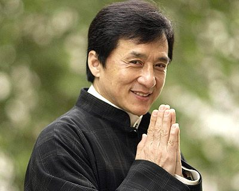

Nome : Chan Kong-sang, mais conhecido como Jackie Chan
Idade : 67 anos
Nascimento : 7 de abril de 1954 , Victoria Peak, Hong Kong
Qualificações : Ator, Produtor, Roteirista, Coreógrafo, Diretor de cinema e Cantor honconguês
especialista em Artes marciais.
Contato :
http://www.jackiechan.com/
Instagram
enquiry@jackiechan.com
Um pouco sobre mim...
- Grava ele mesmo a grande maioria das cenas perigosas de seus filmes, dispensando os dublês. Por
causa disto já quebrou o nariz três vezes, o tornozelo uma vez e vários de seus dedos diversas
vezes;
- Utiliza os mais diversos objetos em suas cenas de luta, entre eles cadeiras, mesas, lâmpadas, etc;
- Em vários de seus filmes ao término dos créditos finais surgem os erros ocorridos durante as
filmagens;
- Na maioria das vezes dubla sua própria voz para a versão em inglês de seus filmes asiáticos;
- Kong-sang Chan, nome de batismo de Jackie Chan, significa "nascido em Hong Kong";
- Possui uma estrela na Calçada da Fama, localizada em 6801 Hollywood Boulevard.